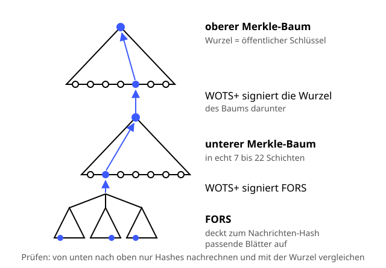

SLH-DSA (SPHINCS+)
Schutzziele: Authentizität Integrität
Unterschreiben nur mit Hashfunktionen – die Hausmannskost unter den Post-Quanten-Rezepten.
Definition
SLH-DSA (Stateless Hash-Based Digital Signature Algorithm) ist seit August 2024 der NIST-Standard FIPS 205 und basiert auf SPHINCS+. Seine Sicherheit hängt nur von der Hashfunktion ab, etwa SHA-256 – das macht es zur vorsichtigsten Wahl. Quantencomputer können Hashfunktionen mit dem Grover-Algorithmus höchstens quadratisch schneller angreifen – das gleicht man mit ausreichend langen Hashwerten aus. SLH-DSA stapelt Einmalsignaturen und Merkle-Bäume zu einem riesigen Baum, dem Hypertree.
Zutaten
- Eine Hashfunktion: SHA-2 oder SHAKE256
- WOTS+-Einmalsignaturen
- Merkle-Bäume, in Schichten gestapelt
- FORS-Bäume für den Nachrichten-Hash
- Ein geheimer Startwert, aus dem alle Blätter abgeleitet werden
Zubereitung
- Schlüssel: Aus dem geheimen Startwert ergeben sich alle Blätter. Die Wurzel des obersten Baums ist der öffentliche Schlüssel.
- Signieren: Aus Nachricht und Zufall entsteht ein Hash. Er bestimmt, welcher FORS-Baum ganz unten benutzt wird.
- FORS signiert den Nachrichten-Hash, indem es die dazu passenden geheimen Blätter aufdeckt.
- Ein WOTS+-Blatt im Merkle-Baum darüber signiert den öffentlichen FORS-Schlüssel.
- So geht es Schicht für Schicht nach oben: Jede Baumwurzel wird vom Baum darüber signiert.
- Die Signatur besteht aus allen diesen Teilsignaturen plus den Pfaden zu den Wurzeln.
- Prüfen: Bob rechnet nur mit Hashes von unten nach oben und vergleicht das Ergebnis mit dem öffentlichen Schlüssel.
Skizze

Blau ist der Weg einer Signatur: vom Nachrichten-Hash ganz unten bis zur Wurzel oben, die jeder kennt.
Skizze erstellt von Claude (KI)
Demo
Tipps
- „Stateless“ heißt: Man muss sich nicht merken, welche Blätter schon benutzt wurden. Der Baum ist so riesig, dass ein zufällig gewähltes Blatt praktisch nie zweimal drankommt.
- Die Verwandten XMSS und LMS sind stateful: Dort muss ein Zähler mitlaufen. Wird ein altes Schlüssel-Backup mit veraltetem Zähler eingespielt, ist der Schlüssel in Gefahr.
- Kleine Schlüssel, große Signaturen: Der öffentliche Schlüssel hat 32 Byte, eine Signatur 7856 Byte (SLH-DSA-128s) oder 17088 Byte (128f). „s“ steht für small, „f“ für fast.
- Signieren ist langsam, Prüfen geht recht schnell. Ideal für Firmware, Software-Updates und Root-Zertifikate – selten signiert, oft geprüft.
- Wer dem SHA-256-Rezept vertraut, kann auch SLH-DSA vertrauen. Für alltägliche Signaturen ist ML-DSA meist praktischer.